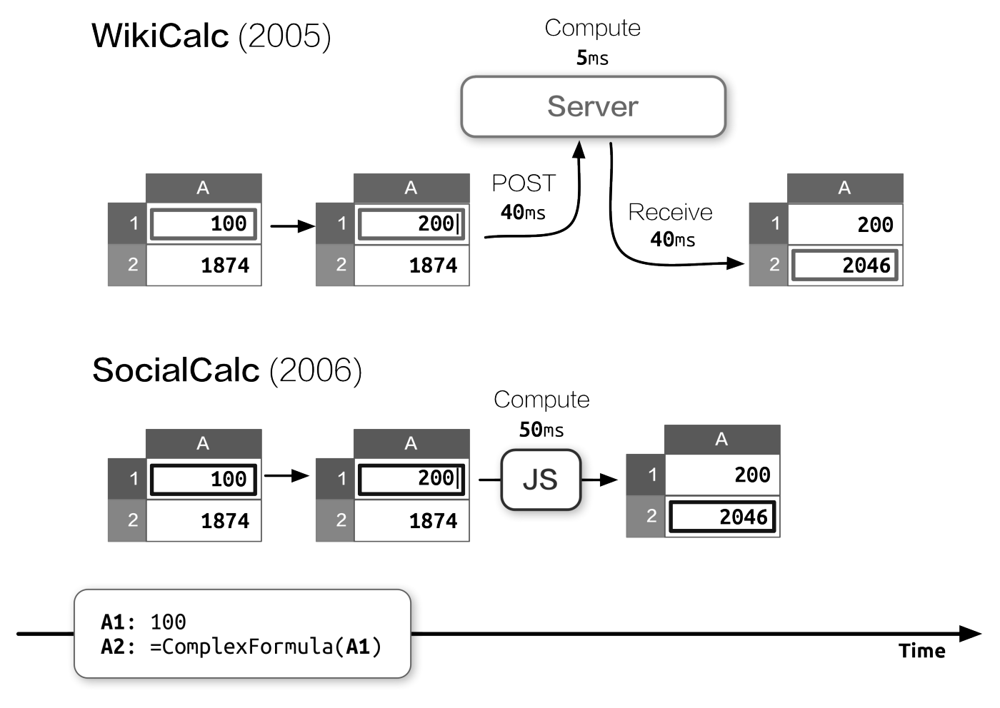
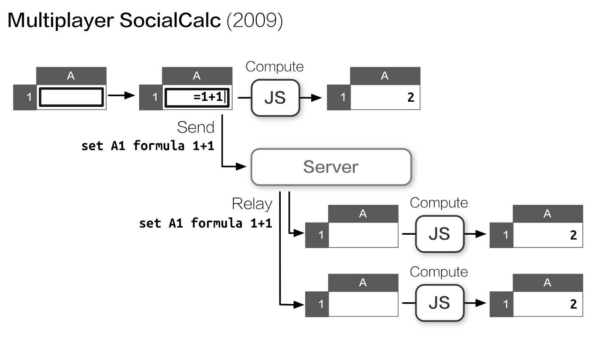
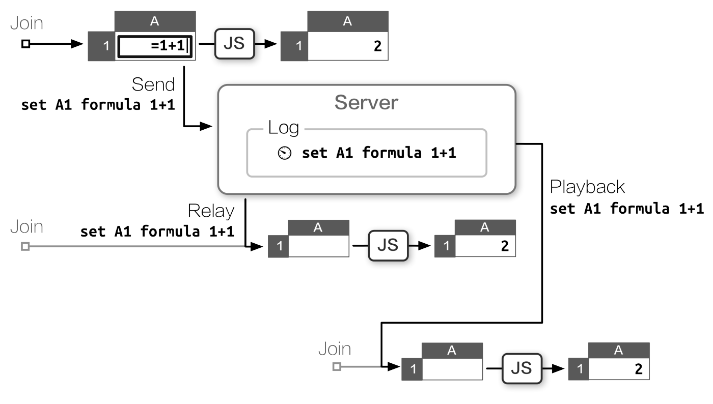
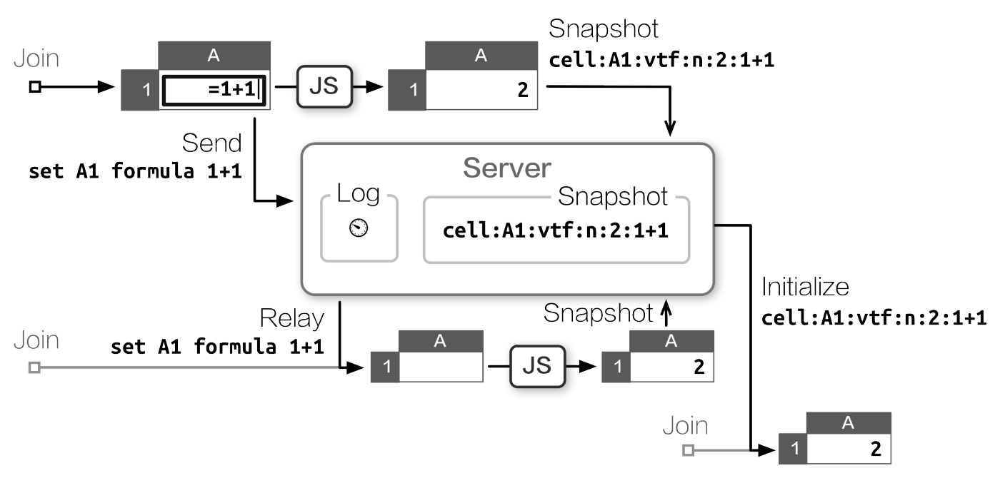
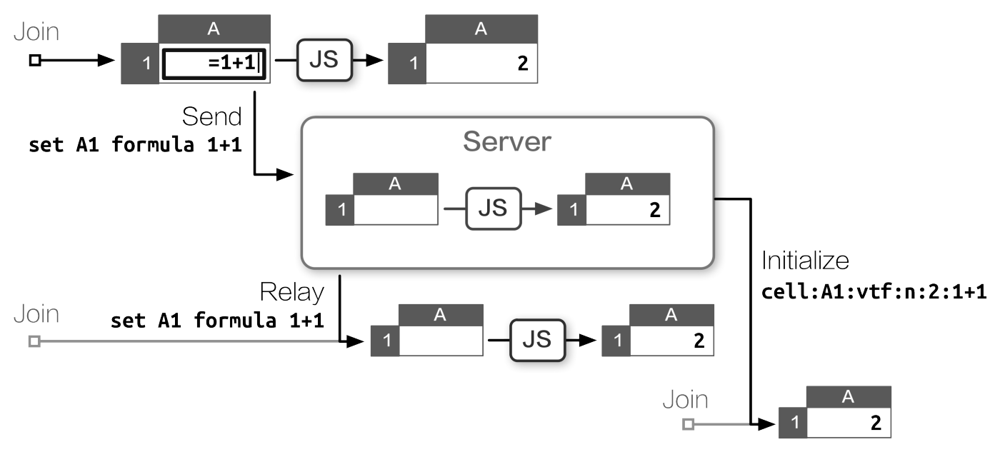
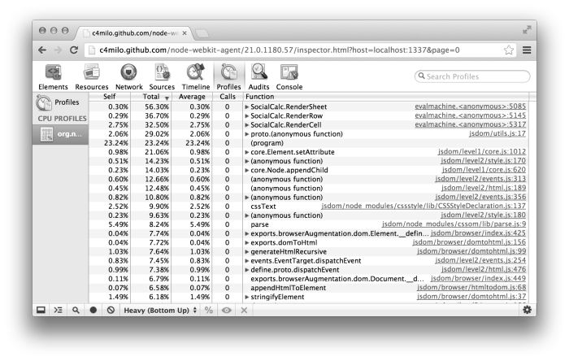
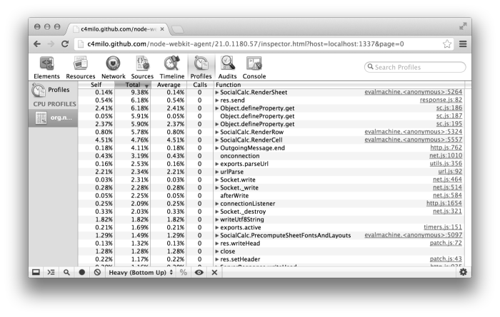
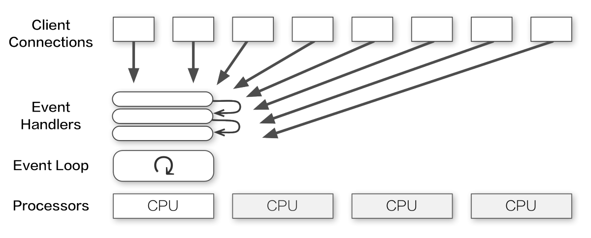
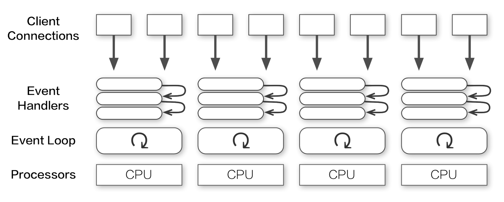
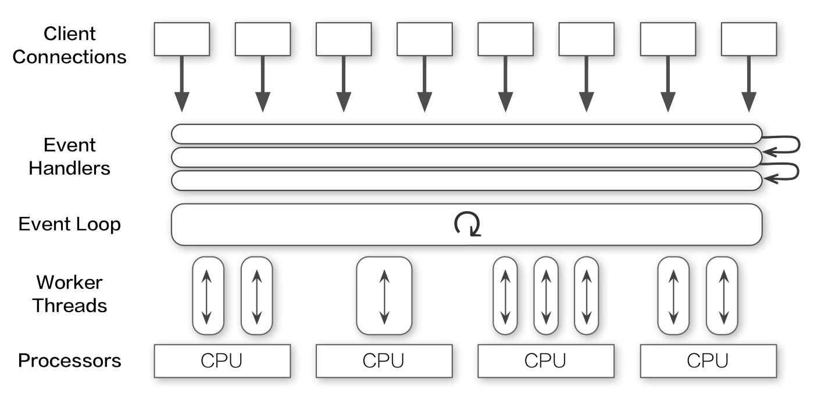

From SocialCalc to EtherCalc
by Audrey Tang
EtherCalc is an online spreadsheet system optimized toward simultaneous editing, using SocialCalc as its in-browser spreadsheet engine. Designed by Dan Bricklin (the inventor of spreadsheets), SocialCalc is part of the Socialtext platform, a suite of social collaboration tools for enterprise users.
For the Socialtext team, performance was the primary goal behind SocialCalc’s development in 2006. The key observation was this: Client-side computation in JavaScript, while an order of magnitude slower than server-side computation in Perl, was still much faster than the network latency incurred during AJAX round trips.

SocialCalc performs all of its computations in the browser; it uses the server only for loading and saving spreadsheets. Toward the end of the Architecture of Open Source Applications (An Analysis of TCP Processing Overhead) chapter on SocialCalc, we introduced simultaneous collaboration on spreadsheets using a simple, chatroom-like architecture.

However, as we began to test it for production deployment, we discovered several shortcomings in its performance and scalability characteristics, motivating a series of system-wide rewrites in order to reach acceptable performance. In this chapter, we’ll see how we arrived at that architecture, how we used profiling tools, and how we made new tools to overcome performance problems.
Design Constraints
The Socialtext platform has both behind-the-firewall and on-the-cloud deployment options, imposing unique constraints on EtherCalc’s resource and performance requirements.
At the time of this writing, Socialtext requires 2 CPU cores and 4 GB RAM for VMWare vSphere-based intranet deployment. For cloud-based hosting, a typical Amazon EC2 instance provides about twice that capacity, with 4 cores and 7.5 GB of RAM.
Behind-the-firewall deployment means that we can’t simply throw hardware at the problem in the same way multi-tenant, hosted-only systems did (e.g., DocVerse, which later became part of Google Docs); we can assume only a modest amount of server capacity.
Compared to intranet deployments, cloud-hosted instances offer better capacity and on-demand extension, but network connections from browsers are usually slower and fraught with frequent disconnections and reconnections.
Therefore, the following resource constraints shaped EtherCalc’s architecture directions:
::: description An event-based server allows us to scale to thousands of concurrent connections with a small amount of RAM.
Based on SocialCalc’s original design, we offload most computations and all content rendering to client-side JavaScript.
By sending spreadsheet operations, instead of spreadsheet content, we reduce bandwidth use and allow recovering over unreliable network connections. :::
Initial Prototype
We started with a WebSocket server implemented in Perl 5, backed by Feersum, a libev-based non-blocking web server developed at Socialtext. Feersum is very fast, capable of handling over 10,000 requests per second on a single CPU. On top of Feersum, we use the PocketIO middleware to leverage the popular Socket.io JavaScript client, which provides backward compatibility for legacy browsers without WebSocket support.
The initial prototype closely resembles a chat server. Each collaborative session is a chatroom; clients sends their locally executed commands and cursor movements to the server, which relays them to all other clients in the same room.
The diagram below shows a typical flow of operation.

The server logs each command with a timestamp. If a client drops and reconnects, it can resume by asking for a log of all requests since it was disconnected, then replay those commands locally to get to the same state as its peers.
This simple design minimized server-side CPU and RAM requirements, and demonstrates reasonable resiliency against network failure.
First Bottleneck
When we put the prototype to field testing in June 2011, we quickly discovered a performance problem with long-running sessions. Spreadsheets are long-lived documents, and a collaborative session can accumulate thousands of modifications over weeks of editing. When a client joins such an edit session under the naive backlog model, it must replay thousands of commands, incurring a significant startup delay before it can make any modifications.
To mitigate this issue, we implemented a snapshot mechanism. After every 100 commands sent to a room, the server will poll the states from each active client, and save the latest snapshot it receives next to the backlog. A freshly joined client receives the snapshot along with new commands entered after the snapshot was taken, so it only needs to replay 99 commands at most.

This workaround solved the CPU issue for new clients, but created a network performance problem of its own, as it taxes each client’s upload bandwidth. Over a slow connection, this delays the reception of subsequent commands from the client.
Moreover, the server has no way to validate the consistency of snapshots submitted by clients. Therefore, an erroneous—or malicious—snapshot can corrupt the state for all newcomers, placing them out of sync with existing peers.
An astute reader may note that both problems are caused by the server’s inability to execute spreadsheet commands. If the server can update its own state as it receives each command, it would not need to maintain a command backlog at all.
The in-browser SocialCalc engine is written in JavaScript. We considered translating that logic into Perl, but that would have carried the steep cost of maintaining two code bases. We also experimented with embedded JS engines (V8, SpiderMonkey), but they imposed their own performance penalties when running inside Feersum’s event loop.
Finally, by August 2011, we resolved to rewrite the server in Node.js.
Porting to Node.js
The initial rewrite went smoothly because both Feersum and Node.js are based on the same libev event model, and Pocket.io’s API matches Socket.io closely. It took us only an afternoon to code a functionally equivalent server in just 80 lines of code, thanks to the concise API offered by ZappaJS.
Initial micro-benchmarking showed that porting to Node.js cost us about one half of the maximum throughput. On a typical Intel Core i5 CPU in 2011, the original Feersum stack handled 5000 requests per second, while Express on Node.js maxed out at 2800 requests per second.
This performance degradation was deemed acceptable for our first JavaScript port, as it wouldn’t significantly increase latency for users, and we expect that it will improve over time.
Subsequently, we continued the work to reduce client-side CPU use and minimize bandwidth use by tracking each session’s ongoing state with server-side SocialCalc spreadsheets.

Server-Side SocialCalc
The key enabling technology for our work is jsdom, a full implementation of the W3C document object model, which enables Node.js to load client-side JavaScript libraries within a simulated browser environment.
Using jsdom, it’s trivial to create any number of server-side SocialCalc spreadsheets, each taking about 30 KB of RAM, running in its own sandbox:
require! <[ vm jsdom ]>
create-spreadsheet = ->
document = jsdom.jsdom \<html><body/></html>
sandbox = vm.createContext window: document.createWindow! <<< {
setTimeout, clearTimeout, alert: console.log
}
vm.runInContext """
#packed-SocialCalc-js-code
window.ss = new SocialCalc.SpreadsheetControl
""" sandbox
Each collaboration session corresponds to a sandboxed SocialCalc controller, executing commands as they arrive. The server then transmits this up-to-date controller state to newly joined clients, removing the need for backlogs altogether.
Satisfied with benchmarking results, we coded a Redis-based persistence layer and launched EtherCalc.org for public beta testing. For the next six months, it scaled remarkably well, performing millions of spreadsheet operations without a single incident.
In April 2012, after delivering a talk on EtherCalc at the OSDC.tw conference, I was invited by Trend Micro to participate in their hackathon, adapting EtherCalc into a programmable visualization engine for their real-time web traffic monitoring system.
For their use case we created REST APIs for accessing individual cells with GET/PUT as well as POSTing commands directly to a spreadsheet. During the hackathon, the brand-new REST handler received hundreds of calls per second, updating graphs and formula cell contents on the browser without any hint of slowdown or memory leaks.
However, at the end-of-day demo, as we piped traffic data into EtherCalc and started to type formulas into the in-browser spreadsheet, the server suddenly locked up, freezing all active connections. We restarted the Node.js process, only to find it consuming 100% CPU, locking up again soon after.
Flabbergasted, we rolled back to a smaller data set, which did work correctly and allowed us to finish the demo. But I wondered: what caused the lock-up in the first place?
Profiling Node.js
To find out where those CPU cycles went to, we needed a profiler.
Profiling the initial Perl prototype had been very straightforward, thanks largely to the illustrious NYTProf profiler, which provides per-function, per-line, per-opcode and per-block timing information, with detailed call-graph visualization and HTML reports. In addition to NYTProf, we also traced long-running processes with Perl’s built-in DTrace support, obtaining real-time statistics on function entry and exit.
In contrast, Node.js’s profiling tools leave much to be desired. As of this writing, DTrace support is still limited to illumos-based systems in 32-bit mode, so we mostly relied on the Node Webkit Agent, which provides an accessible profiling interface, albeit with only function-level statistics.
A typical profiling session looks like this:
# "lsc" is the LiveScript compiler
# Load WebKit agent, then run app.js:
lsc -r webkit-devtools-agent -er ./app.js
# In another terminal tab, launch the profiler:
killall -USR2 node
# Open this URL in a WebKit browser to start profiling:
open http://tinyurl.com/node0-8-agent
To recreate the heavy background load, we performed high-concurrency REST API calls with the Apache benchmarking tool ab. For simulating browser-side operations, such as moving cursors and updating formulas, we used Zombie.js, a headless browser also built with jsdom and Node.js.
Ironically, the bottleneck turned out to be in jsdom itself.

From the report in Figure 6, we can see that RenderSheet dominates the CPU use. Each time the server receives a command, it spends a few microseconds to redraw the innerHTML of cells to reflect the effect of each command.
Because all jsdom code runs in a single thread, subsequent REST API calls are blocked until the previous command’s rendering completes. Under high concurrency, this queue eventually triggered a latent bug that ultimately resulted in server lock-up.
As we scrutinized the heap usage, we saw that the rendered result is all but unreferenced, as we don’t really need a real-time HTML display on the server side. The only reference to it is in the HTML export API, and for that we can always reconstruct each cell’s innerHTML rendering from the spreadsheet’s in-memory structure.
So, we removed jsdom from the RenderSheet function, re-implemented a minimal DOM in 20 lines of LiveScript1 for HTML export, then ran the profiler again (see Figure 7).

Much better! We have improved throughput by a factor of 4, HTML exporting is 20 times faster, and the lock-up problem is gone.
Multi-Core Scaling
After this round of improvement, we finally felt comfortable enough to integrate EtherCalc into the Socialtext platform, providing simultaneous editing for wiki pages and spreadsheets alike.
To ensure a fair response time on production environments, we deployed a reverse-proxying nginx server, using its limit_req2 directive to put an upper limit on the rate of API calls. This technique proved satisfactory for both behind-the-firewall and dedicated-instance hosting scenarios.
For small and medium-sized enterprise customers, though, Socialtext provides a third deployment option: multi-tenant hosting. A single, large server hosts more than 35,000 companies, each averaging around 100 users.
In this multi-tenant scenario, the rate limit is shared by all customers making REST API calls. This makes each client’s effective limit much more constraining—around 5 requests per second. As noted in the previous section, this limitation is caused by Node.js using only one CPU for all its computation.

Is there a way to make use of all those spare CPUs in the multi-tenant server?
For other Node.js services running on multi-core hosts, we utilized a pre-forking cluster server that creates a process for each CPU.

However, while EtherCalc does support multi-server scaling with Redis, the interplay of Socket.io clustering with RedisStore in a single server would have massively complicated the logic, making debugging much more difficult.
Moreover, if all processes in the cluster are tied in CPU-bound processing, subsequent connections would still get blocked.
Instead of pre-forking a fixed number of processes, we sought a way to create one background thread for each server-side spreadsheet, thereby distributing the work of command execution among all CPU cores.

For our purpose, the W3C Web Worker API is a perfect match. Originally intended for browsers, it defines a way to run scripts in the background independently. This allows long tasks to be executed continuously while keeping the main thread responsive.
So we created webworker-threads, a cross-platform implementation of the Web Worker API for Node.js.
Using webworker-threads, it’s very straightforward to create a new SocialCalc thread and communicate with it:
{ Worker } = require \webworker-threads
w = new Worker \packed-SocialCalc.js
w.onmessage = (event) -> ...
w.postMessage command
This solution offers the best of both worlds: It gives us the freedom to allocate more CPUs to EtherCalc whenever needed, and the overhead of background thread creation remains negligible on single-CPU environments.
Lessons Learned
Constraints are Liberating
In his book The Design of Design, Fred Brooks argues that by shrinking the designer’s search space, constraints can help to focus and expedite a design process. This includes self-imposed constraints:
Artificial constraints for one’s design task have the nice property that one is free to relax them. Ideally, they push one into an unexplored corner of a design space, stimulating creativity.
During EtherCalc’s development, such constraints were essential to maintain its conceptual integrity throughout various iterations.
For example, it might seem attractive to adopt three different concurrency architectures, each tailored to one of our server flavors (behind-the-firewall, on-the-cloud, and multi-tenant hosting). However, such premature optimization would have severely hampered the conceptual integrity.
Instead, I kept the focus on getting EtherCalc performing well without trading off one resource requirement for another, thereby minimizing its CPU, RAM and network uses at the same time. Indeed, since the RAM requirement is under 100 MB, even embedded platforms such as Raspberry Pi can host it easily.
This self-imposed constraint made it possible to deploy EtherCalc on PaaS environments (e.g., DotCloud, Nodejitsu and Heroku) where all three resources are constrained instead of just one. This made it very easy for people to set up a personal spreadsheet service, thus prompting more contributions from independent integrators.
Worst is Best
At the YAPC::NA 2006 conference in Chicago, I was invited to predict the open-source landscape, and this was my entry: 3
I think, but I cannot prove, that next year JavaScript 2.0 will bootstrap itself, complete self-hosting, compile back to JavaScript 1, and replace Ruby as the Next Big Thing on all environments.
I think CPAN and JSAN will merge; JavaScript will become the common backend for all dynamic languages, so you can write Perl to run in the browser, on the server, and inside databases, all with the same set of development tools.
Because, as we know, worse is better, so the worst scripting language is doomed to become the best.
The vision turned into reality around 2009 with the advent of new JavaScript engines running at the speed of native machine instructions. By the time of this writing, JavaScript has become a “write once, run anywhere” virtual machine—other major languages can compile to it with almost no performance penalty.
In addition to browsers on the client side and Node.js on the server, JavaScript also made headway into the Postgres database, enjoying a large collection of freely reusable modules shared by these runtime environments.
What enabled such sudden growth in the community? During the course of EtherCalc’s development, from participating in the fledgling NPM community, I reckoned that it was precisely because JavaScript prescribes very little and bends itself to the various uses, so innovators can focus on the vocabulary and idioms (e.g., jQuery and Node.js), each team abstracting their own Good Parts from a common, liberal core.
New users are offered a very simple subset to begin with; experienced developers are presented with the challenge to evolve better conventions from existing ones. Instead of relying on a core team of designers to get a complete language right for all anticipated uses, the grassroots development of JavaScript echoes Richard P. Gabriel’s well-known maxim of Worse is Better.
LiveScript, Redux
In contrast to the straightforward Perl syntax of Coro::AnyEvent, the callback-based API of Node.js necessitates deeply nested functions that are difficult to reuse.
After experimenting with various flow-control libraries, I finally solved this issue by settling on LiveScript, a new language that compiles to JavaScript, with syntax heavily inspired by Haskell and Perl.
In fact, EtherCalc was ported through a lineage of four languages: JavaScript, CoffeeScript, Coco and LiveScript. Each iteration brings more expressivity, while maintaining full back and forward compatibility, thanks to efforts such as js2coffee and js2ls.
Because LiveScript compiles to JavaScript rather than interpreting its own bytecode, it remains completely compatible with function-scoped profilers. Its generated code performs as good as hand-tuned JavaScript, taking full advantage of modern native runtimes.
On the syntactic side, LiveScript eliminated nested callbacks with novel constructs such as backcalls and cascades. It provides us with powerful syntactic tools for functional and object-oriented composition.
When I first encountered LiveScript, I remarked that it’s like “a smaller language within Perl 6, struggling to get out”—a goal made much easier by adopting the same semantics as JavaScript itself and focusing strictly on syntactical ergonomics.
Conclusion
Unlike the SocialCalc project’s well-defined specification and team development process, EtherCalc was a solo experiment from mid-2011 to late-2012 and served as a proving ground for assessing Node.js’s readiness for production use.
This unconstrained freedom afforded an exciting opportunity to explore a wide variety of alternative languages, libraries, algorithms and architectures. I’m very grateful to all contributors, collaborators and integrators, and especially to Dan Bricklin and my Socialtext colleagues for encouraging me to experiment with these technologies. Thank you, folks!
-
https://github.com/audreyt/ethercalc/commit/fc62c0eb#L1R97 ↩
-
http://wiki.nginx.org/HttpLimitReqModule#limit_req↩ -
See http://pugs.blogs.com/pugs/2006/06/my_yapcna_light.html ↩